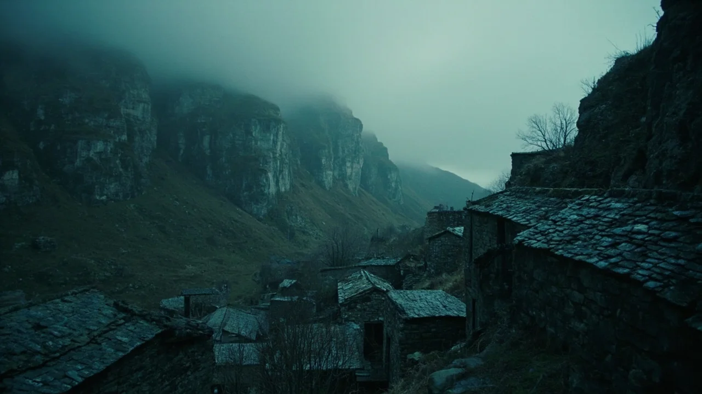
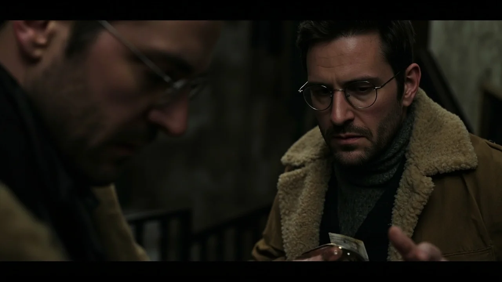
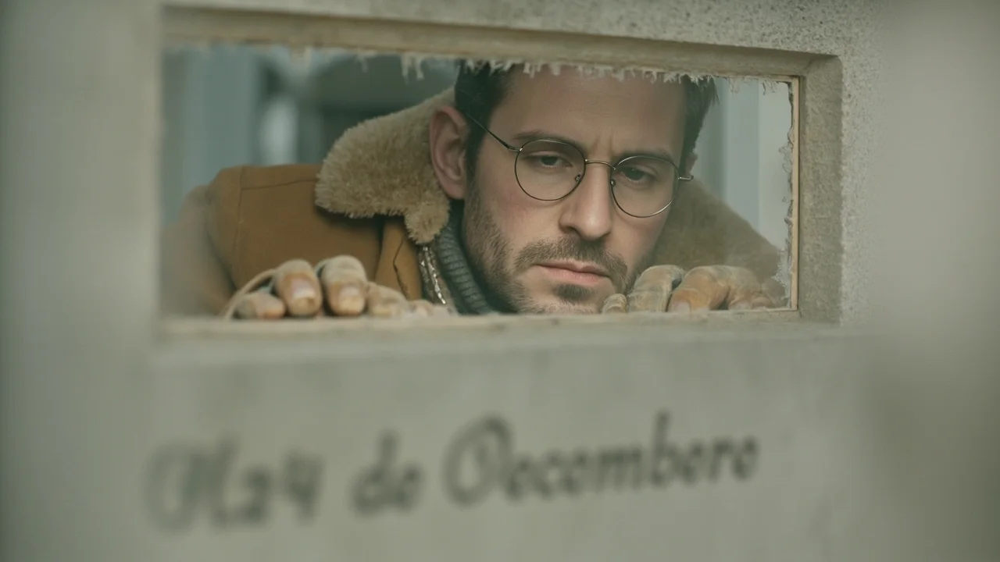
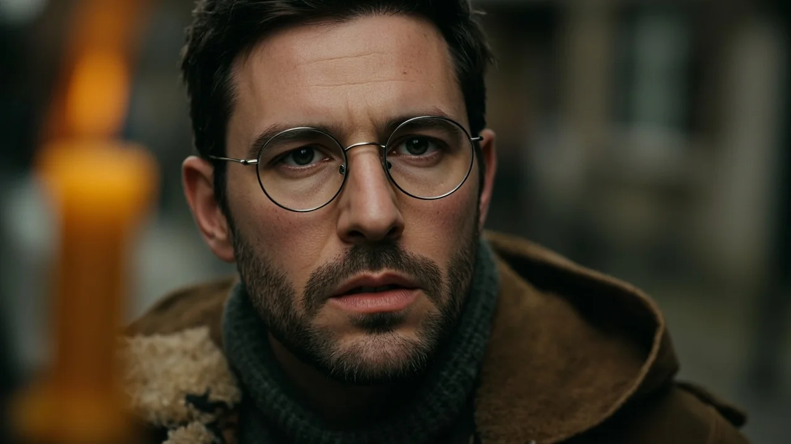
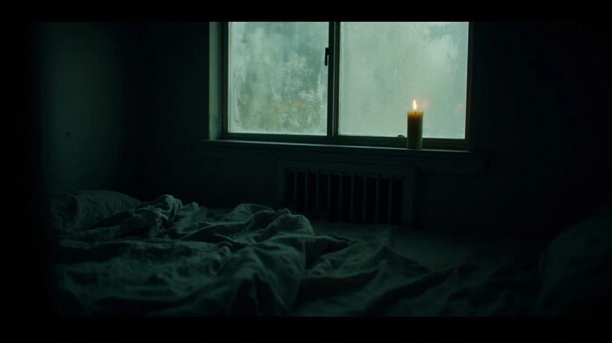

El limpiaparabrisas apartaba aguanieve con un chasquido bronco. Álvaro redujo a segunda al doblar la última curva, donde el asfalto moría en grava helada. Al fondo, encajada entre paredones calizos, apareció Peñaumbría. No había adornos navideños; solo un racimo de tejados de pizarra apiñados bajo la niebla.
A las seis, las tiendas bajaban los cierres con prisas. Un carnicero trancó la puerta antes de que Álvaro pudiera acercarse. Miró hacia arriba: en cada alféizar, tras los cristales empañados, ardía una única vela gruesa de cera amarilla. Cincuenta casas, cincuenta llamas inmóviles velando el silencio.
La pensión La Solana ocupaba un caserón al final de la cuesta. Doña Carmen, menuda y de manos castigadas por los sabañones, lo recibió sin retirar la tranca hasta comprobar su maleta.
—No solemos tener forasteros en estas fechas —dijo, cobrándole por adelantado—. La cena es a las ocho. A las diez apago luces y atranco la portalada. No quiero ruidos.
Álvaro encendió su grabadora sobre la mesa camilla.
—He venido por la leyenda de Nochebuena, doña Carmen. Dicen en el valle que cada veinticuatro de diciembre desaparece alguien del pueblo.
La mujer detuvo la cuchara sobre el puchero.
—Supersticiones de viejos para que los muchachos no se despeñen por el barranco —contestó sin mirarlo—. Cuentos para espantar curiosos.
—¿Por qué encienden las velas en las ventanas? —insistió él.
—Para acordarnos de los que se fueron —murmuró con dedos trémulos.
—¿De los muertos?
Doña Carmen apretó los labios y se negó a responder. Dio media vuelta y trancó la cocina tras de sí.
La mañana del veintidós de diciembre amaneció bajo un cielo plomizo. Álvaro bajó a la plaza con el cuaderno en el bolsillo. En la taberna El Roble, tres ancianos jugaban al dominó junto a una estufa de fundición que crepitaba con leña de enebro.
Álvaro pidió un café negro y se sentó cerca. El tintineo de las fichas de hueso marcaba el compás de la sala.
—Buenos días —saludó—. Preparo una crónica sobre tradiciones locales. Me interesa saber qué ocurrió en la Nochebuena de mil novecientos veinticuatro.

Don Eusebio, con boina calada hasta las cejas, dejó una ficha suspendida en el aire.
—Aquel año cayó una nevada descomunal —masculló, mirando de reojo al tabernero—. Una familia de arrieros se perdió en la collada buscando ganado. No quedaron ni los arreos. El monte se cobra lo que quiere cuando aprieta la helada.
—Eso no fue lo que contó tu abuelo, Eusebio —intervino el tabernero, secando un vaso opaco—. No se perdieron en la collada. Bajó lo que duerme en el bosque hondo. Cada Navidad baja buscando a los que andan sueltos, a los que no tienen lumbre ni quién los reclame en una mesa.
—¡Cállate la boca, Matías! —espetó el anciano, golpeando la mesa—. Bastante tenemos ya como para calentarle la cabeza a los de fuera.
Álvaro se inclinó hacia ellos.
—En el pueblo vecino me hablaron de un libro guardado en la sacristía de la iglesia vieja. Un registro con los nombres de los desaparecidos desde hace un siglo. ¿Quién lo custodia?
El silencio cayó como una losa. Los tres ancianos recogieron sus fichas sin terminar la partida. Don Eusebio arrojó unas monedas sobre el mostrador y salió a la calle. El tabernero retiró la taza y señaló la puerta con un gesto mudo y tajante.
El archivo municipal era un desván polvoriento en el ayuntamiento, atestado de legajos carcomidos y cajas combadas por la humedad. El alguacil, un hombre cojo llamado Bernabé, lo dejó pasar tras aceptar un billete de veinte euros, advirtiéndole que a las dos cerraría.
Álvaro buscó entre las carpetas de fiestas patronales hasta dar con una caja de madera sin rotular. Dentro reposaban decenas de fotografías de época en cartulina sepia. Eran estampas navideñas tomadas en la plaza a lo largo de más de cien años: campesinos adustos en mil novecientos doce; niños con abrigos raídos en mil novecientos treinta y seis; vecinos de posguerra en mil novecientos cincuenta y ocho.
Al examinar los retratos con una lupa, el estómago se le encogió.
Al fondo de todas las imágenes, recortado junto al tronco del gran tejo, aparecía siempre la misma figura: un hombre alto y enjuto, envuelto en un levitón negro de paño con botones de cuerno. Su rostro pálido y huesudo no envejecía con el paso de las décadas. Mientras los vecinos miraban al sacerdote, aquel hombre clavaba sus pupilas directamente en el objetivo de la cámara con fijeza inhumana.
—¿Quién es este hombre? —preguntó Álvaro, bajando la escalera con una copia en la mano.
Bernabé miró la cartulina por encima de sus lentes y retrocedió con un traspié.
—Deje eso donde estaba —gimió el alguacil, arrancándole la fotografía—. Salga de aquí ahora mismo.
—¡Lleva más de un siglo en el pueblo! —insistió Álvaro—. Dígame quién es.

—Es el que cobra la renta del invierno —soltó el viejo con la voz rota—. Y usted no debió venir solo.
La pesada puerta de roble se cerró de golpe en sus narices, levantando polvo sobre sus botas.
La noche del veintitrés de diciembre, el termómetro cayó a doce bajo cero y el viento silbaba entre las vigas. Álvaro no lograba dormir. Sobre el escritorio descansaban sus notas y la grabadora en espera.
A las once y media, un sonido seco rompió la quietud del valle.
Era el tañido de una campana. No procedía de la iglesia del pueblo, con campanas descolgadas hacía décadas, sino del bosque comunal, en lo alto del barranco. El bronce sonaba con un eco fúnebre, amortiguado por la nieve.
Álvaro apartó la cortina. Bajo la farola vio a una niña pequeña. Llevaba un camisón de lino blanco con puntillas gastadas hasta los tobillos. Caminaba descalza sobre la nieve helada sin titubear, sin prisa y sin encoger los hombros.
Se calzó las botas, guardó la grabadora y bajó las escaleras. La puerta de la pensión estaba desatrancada y el sillón de doña Carmen, vacío.
Salió a la calle cortante y siguió el rastro hacia el pinar. En la nieve apenas quedaban marcas circulares, leves como el poso de un pájaro. Álvaro encendió la linterna; el haz temblaba entre abetos cargados de carámbanos.
Caminó veinte minutos guiado por el compás del bronce. Tras cruzar un puente de tablas sobre un arroyo helado, desembocó en las ruinas de una ermita románica.
El tejado se había derrumbado, pero dentro no soplaba el viento. Decenas de velas encendidas ardían sobre las losas del suelo, derramando cera sobre el musgo. En el muro del ábside, talladas en la sillería con cortes de escoplo, había centenares de líneas con nombres y fechas.
Álvaro pasó la yema enguantada por los surcos. Cada año registraba una sola entrada fechada el veinticuatro de diciembre:
«Tomás el Carretero — 1898» «Serafina del Molino — 1921» «Marcos el Huérfano — 1953» «Daniel Varga, caminante — 1984» «Irene Soler, viajera — 2011»
Al final de la columna, grabado con una incisión tan reciente que la piedra aún desprendía polvillo blanco, leyó con el pulso desbocado:
«Álvaro Gómez — 24 de diciembre».

El pánico le atenazó la garganta. Dio media vuelta entre las piedras y corrió hacia el pueblo sin mirar atrás, con las ramas secas azotándole los brazos. La campana enmudeció a su espalda en cuanto pisó el empedrado de la calle mayor.
La pensión estaba en penumbra.
—¡Doña Carmen! —gritó al irrumpir en el zaguán—. ¡Doña Carmen!
Nadie respondió. La puerta de la cocina colgaba entreabierta; el puchero sobre la chapa estaba cubierto por grasa fría. La mecedora de mimbre se balanceaba despacio, empujada por una corriente invisible.
Álvaro subió a su alcoba, echó el cerrojo y encendió la lámpara. El grito se le quedó atascado en el pecho.
Su habitación estaba enteramente cubierta por un manto de nieve granulada de tres dedos de grosor. La colcha, la maleta y sus notas reposaban bajo la escarcha. Sin embargo, las ventanas permanecían cerradas a cal y canto, con los pestillos intactos.
Temblando, extrajo la grabadora del bolsillo. Rebobinó la cinta y presionó la tecla de reproducción esperando escuchar sus pasos en el bosque.
En su lugar, el altavoz emitió un zumbido seguido de dos voces nítidas.
—¿Por qué has venido hasta aquí? —preguntaba su propia voz, grabada con calma irreal.
Una voz áspera y cavernosa respondió desde la cinta:
—Llevo cien inviernos esperando volver a casa. ¿Estás dispuesto a ocupar mi lugar en el hielo?
Álvaro soltó el aparato sobre la cama. Él jamás había mantenido esa conversación. Miró el reloj: las dos de la madrugada. Faltaban menos de veintidós horas para la Nochebuena.
A las nueve de la noche del veinticuatro de diciembre, Álvaro metió la maleta en el coche, resuelto a huir. Las calles estaban desiertas. Únicamente las velas de los alféizares temblaban tras los visillos.
Giró la llave del contacto. El motor tosió antes de arrancar. Metió primera, pisó el acelerador y enfiló la pista hacia el puerto.
La ventisca se desató con furia implacable. Una muralla blanca sepultó los faros, transformando el camino en un túnel ciego. Álvaro conducía en segunda marcha, aferrado al volante con los nudillos blancos. Descendió durante media hora bordeando precipicios, guiándose por los postes de la calzada.

El coche describió una curva cerrada y los faros iluminaron de pronto una hilera de casas familiares.
Había vuelto a la plaza mayor.
Frenó en seco sobre la placa de hielo. Apagó el motor y contempló la escena a través del parabrisas.
Toda la población de Peñaumbría estaba congregada en círculo alrededor del gran tejo. Ancianos, mujeres y hombres permanecían inmóviles bajo mantas y capas oscuras. Nadie hablaba. En sus manos sostenían velas cuyas llamas no vacilaban ante el vendaval. Sus miradas estaban clavadas en él.
El reloj del campanario comenzó a dar los cuartos para la medianoche.
Álvaro bajó del vehículo con las piernas entumecidas. La puerta se cerró sola con un golpe seco.
De entre el corro de vecinos se abrió paso una figura alta. Era el hombre de las fotografías centenarias. Llevaba el mismo levitón negro y un libro encuadernado en cuero bajo el brazo. Se detuvo a dos metros de Álvaro. Sus ojos grises, vidriosos como canicas, lo examinaron con frialdad.
—Llegas a tiempo, Álvaro —dijo el hombre con la voz de la cinta magnetofónica—. El invierno no espera a nadie.
—¿Qué quieren de mí? —logró articular.
—Sobrevivir —respondió el hombre del abrigo oscuro—. Hace más de un siglo, la gran hambruna mató a medio valle. Este pueblo juró a la nieve vieja entregar una vida cada Nochebuena a cambio de doce meses de lumbre y pan.
—Ustedes asesinan a la gente —susurró Álvaro, retrocediendo hacia el parachoques.
—Entregamos a quien no tiene lazos aquí. A quien llega solo, sin nadie que reclame su ausencia. Tú estás solo en el mundo, Álvaro. Ocuparás el frío para que ellos sigan sentándose a la mesa.
El reloj de la torre dio la primera campanada de la medianoche. Un tañido hondo sacudió la nieve de las cornisas. La multitud dio un paso al unísono hacia delante.
De pronto, un roce helado tocó los dedos de Álvaro. Al bajar la vista vio a la niña del camisón blanco a su lado.
—Hay una salida —le susurró con aliento a resina—. Si señalas a uno de ellos y dices su nombre en alto antes de la última campanada, ocupará tu sitio y podrás marcharte.

La segunda campanada retumbó en la plaza. Luego la tercera.
Álvaro miró a su alrededor: doña Carmen oculta tras los vecinos; don Eusebio con los ojos suplicantes; una joven madre apretando las manos contra el pecho. Eran cómplices de un siglo de cobardía, pero eran seres de carne y hueso atenazados por el espanto.
La cuarta campanada. La quinta.
El hombre del abrigo oscuro abrió el libro y extrajo una pluma de hueso.
—Di un nombre, forastero —ordenó—. Nombra a tu sustituto o camina hacia el árbol.
La sexta campanada. La séptima.
Álvaro sintió que el hielo le subía por los tobillos. Sabía que si pronunciaba una sola palabra condenaría a un inocente para salvar su piel. Apretó la mandíbula con rabia.
—No voy a condenar a nadie por ustedes —dijo con voz firme.
La octava campanada. La novena.
Álvaro saltó hacia delante, arrebató el libro de cuero de las manos del hombre del abrigo oscuro y lo arrojó contra las brasas de un brasero a los pies del tejo. Las hojas prendieron en una llamarada azulada con hedor a azufre y cera quemada.
—¡Se acabó el tributo! —gritó al viento.
La décima campanada comenzó a sonar, pero el bronce se quebró en seco con un crujido metálico.
Las cincuenta velas de la plaza se apagaron de golpe, como sopladas por una boca gigantesca. La oscuridad cayó sobre Peñaumbría como un manto de plomo. No hubo gritos ni pisadas. Solo el aullido del viento helado borrando todo calor sobre la nieve.
Tres meses después, durante el deshielo de marzo, la Guardia Civil encontró el automóvil de Álvaro abandonado en la cuneta del kilómetro cuarenta y dos, cubierto por ramas secas. La ventanilla estaba bajada y las llaves puestas en el contacto, pero en el interior no había rastro de violencia.
Sobre el asiento del copiloto reposaba su grabadora.
El peritaje judicial de la cinta magnetofónica logró recuperar un único fragmento tras los minutos de estática. Era una voz infantil que susurraba con lentitud desoladora:
«Este año no habrá nadie… Este año no habrá nadie…».
El caso fue archivado como desaparición voluntaria en montaña sin indicios de criminalidad.
Sin embargo, en la Nochebuena siguiente, a cuatrocientos kilómetros de allí, en una urbanización residencial a las afueras de la capital, una niña desapareció de su dormitorio con la puerta cerrada por dentro.
Cuando sus padres entraron desesperados en la alcoba vacía, encontraron los cristales empañados por la escarcha y, sobre el alféizar cerrado con pestillo, una única vela de cera amarilla que ardía con una llama viva y silenciosa.